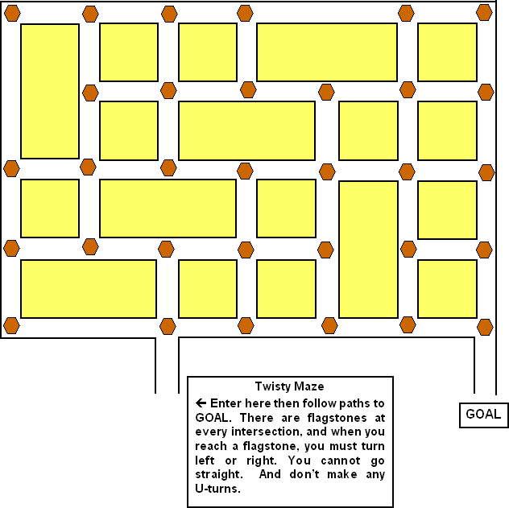

|
The diagram below shows the Twisty Maze, along with the sign that gives its rules. This is one of my small walk-through mazes that are used outside some of the large cornfield mazes. 
Click here to read my lecture on symbolic logic which, incidentally, has the solution to this maze (but without the flagstones). Acknowledgements: I only created the layout for this maze. The rules were created by Peter May, who used them in Taking Turns, a puzzle that appeared in the November 1994 Games World of Puzzles. I would guess that these rules developed out of the rules for the no-left-turn mazes. The first no-left-turn maze was created by Bob Stanton and appeared as a small puzzle in the April/May 1989 issue of Games. No-left-turn mazes are now everywhere, and I’ve been meaning to write an article about their history. But I may never get to it. |